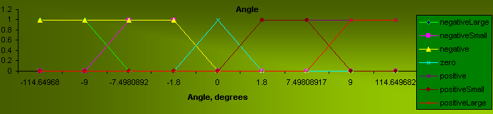
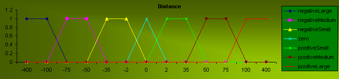
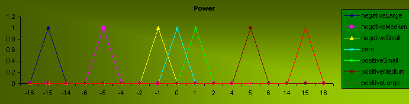

Prevention of Load Sway by a Fuzzy Controller
Manual controls: Arrow Right -
increase the power; Arrow Left - decrease the power;
Space - stop the crane; Arrow Up - lift the load; Arrow Down - lower the load;
Enter - lock the load.
Changes in the rules become effective
upon clicking on the "Fuzzy Control" button.
"Fuzzy Control" indicates
errorless parsing and evaluation of the rules.
"Fuzzy Control" indicates
an error in the rules.
The fuzzy rules controlling the crane can be changed at any time and will become effective upon the next click on "Fuzzy Control" button. Three linguistic variables have been defined: angle, distance and power. The linguistic variables and membership functions cannot be changed interactively.



Unlike the FuzzyTech example that works only in one direction of motion or Omron example that utilizes complicated anti-sway rules, the given model employs two very simple rules that compensate load sway at the distances close to the destination. For each swing of the load, the crane's trolley is moved in the swing direction to reduce the amplitude. The system's behavior without the compensation for the load sway can be observed by removing the last two rules in the set (last four lines in the rule area).